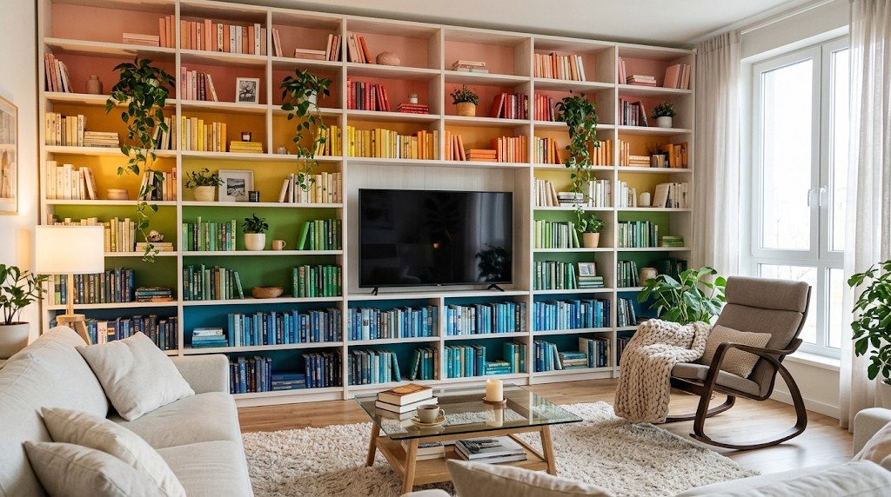
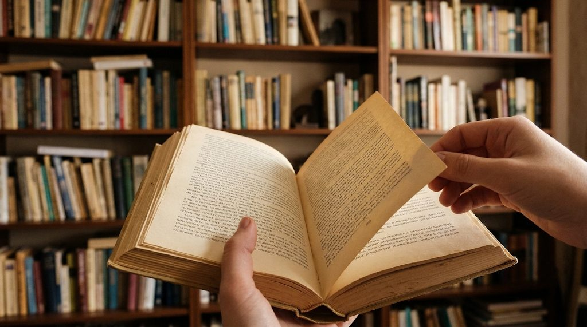

Речі, які варто тримати в руках
Книжки, обрані руками, лляні записники, пір'я та папір, що шурхотить. Невелика крамниця на Рейтарській, де кожну полицю збирали повільно.

Наша полиця цього сезону
Речі, які ми самі тримаємо на столі — від роману про пам'ять міста до пера з горіховим корпусом.
Нічого не знайдено. Спробуйте інший запит.

Книжки, обрані руками
Аркуш почався 2014 року з однієї шафи в майстерні на Подолі. Тепер це дві зали, стіл для читання й полиця, яку ми змінюємо щотижня.
Добірка, а не склад
Кожну книжку на полиці ми прочитали або принаймні тримали в руках.
Папір, який пам'ятає
Працюємо з українськими майстернями: лляні палітурки, кремовий офсет, сургуч.
Подарунки без поспіху
Загортаємо в крафт і додаємо листівку з вашим текстом.
«Книжка — це річ, яка чекає. Тому ми не поспішаємо ні з добіркою, ні з пакуванням, ні з розмовою.»
Олена Кравчук · засновниця «Аркуша»Кава, тиша й нова книжка
Ми відкриті щодня на Рейтарській, 12. Можна прийти без покупки: почитати, вибрати папір або просто погортати сторінки.